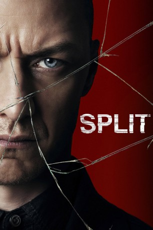

#5812 Split
 gesehen am 24.03.2017
gesehen am 24.03.2017
 
 IMDB-Wertung: 7.4 / 10
IMDB-Wertung: 7.4 / 10  Tomatometer: 75
Tomatometer: 75  Metascore: 0
Metascore: 0 
Für die eigensinnige und achtsame Casey (Anya Taylor-Joy) und ihre zwei Freundinnen Claire (Haley Lu Richardson) und Marcia (Jessica Sula) wird das Leben zur Hölle, als sie eines Tages von einem unheimlichen Mann entführt werden. Ihr Peiniger Kevin (James McAvoy) entpuppt sich nur wenig später als ein ganz spezieller Mensch: Er leidet unter einer multiplen Persönlichkeitsstörung und vereint 23 verschiedene Wesen in seiner Psyche, die sich alle miteinander abwechseln und so für Verwirrung und Entsetzen sorgen. Während die Mädchen verzweifelt nach einer Fluchtmöglichkeit suchen, ahnen sie jedoch nicht, dass sich in Kevin etwas ganz besonders Böses regt – und zwar eine dämonische 24. Persönlichkeit, die sich nur „die Bestie“ nennt und die drauf und dran ist aus Kevin auszubrechen. Für die Mädchen wird die Zeit immer knapper…
Jahr: 2016
Dauer: 117 Minuten
FSK: 16
Land: USA Studio: Universal PicturesTonspuren: DTS - ,
Untertitel: Deutsch,
Auflösung: 1080p (1920x808) Größe: 8939 MB
Genre: Thriller, Horror
Regisseur:  M. Night Shyamalan
M. Night Shyamalan
Drehbuch: Eleonore Adlon
Soundtrack:
Darsteller:
 James McAvoy als Dennis / Patricia / Hedwig / The Beast / Kevin Wendell Crumb / Barry / Orwell / Jade
James McAvoy als Dennis / Patricia / Hedwig / The Beast / Kevin Wendell Crumb / Barry / Orwell / Jade Anya Taylor-Joy als Casey Cooke
Anya Taylor-Joy als Casey Cooke Betty Buckley als Dr. Karen Fletcher
Betty Buckley als Dr. Karen Fletcher Haley Lu Richardson als Claire Benoit
Haley Lu Richardson als Claire Benoit- Jessica Sula als Marcia
- Izzie Coffey als Five-Year-Old Casey
 Brad William Henke als Uncle John
Brad William Henke als Uncle John Sebastian Arcelus als Casey's Father
Sebastian Arcelus als Casey's Father Neal Huff als Mr. Benoit
Neal Huff als Mr. Benoit Ukee Washington als News Anchor
Ukee Washington als News Anchor M. Night Shyamalan als Jai, Hooters Lover
M. Night Shyamalan als Jai, Hooters Lover Rosemary Howard als Kevin's Mother
Rosemary Howard als Kevin's Mother- Lyne Renee als Academic Moderator
- Peter Patrikios als Taxi Driver
- Kash Goins als Flower Kiosk Worker
 Roy James Wilson als Security Guy with Dog
Roy James Wilson als Security Guy with Dog- Christopher Lee Philips als Older Worker
- Julie Potter als Paramedic
- Nakia Dillard als Police Officer #2
- Robin Rieger als Television Reporter
 Dann Fink als Game Show Contestant
Dann Fink als Game Show Contestant Bruce Winant als Game Show Host
Bruce Winant als Game Show Host Gary Ayash als Restaurant Patron , uncredited
Gary Ayash als Restaurant Patron , uncredited Maria Breyman als High-School Student , uncredited
Maria Breyman als High-School Student , uncredited- Jeff Buckner als Police Officer , uncredited
- Colin Campbell als Boy in Park , uncredited
- Steven Dennis als Man at Next Table , uncredited
- Kim Director als Hannah , uncredited
- Kerry Dutka als Restaurant and Mall Patron , uncredited
- Barbara Edwards als Diner Patron , uncredited
 Brian Gildea als Casey's Foster Dad , uncredited
Brian Gildea als Casey's Foster Dad , uncredited Laura Hart als Mall Shopper / Restaurant Patron , uncredited
Laura Hart als Mall Shopper / Restaurant Patron , uncredited Andrea Havens als Traveler in the Station , uncredited
Andrea Havens als Traveler in the Station , uncredited Michael J. Kraycik als Zoo Worker , uncredited
Michael J. Kraycik als Zoo Worker , uncredited- Junnie Lopez als Geraldo , uncredited
- Jalina Mercado als Zoo Goer , uncredited
 John Mitchell als EMT , uncredited
John Mitchell als EMT , uncredited Jeffrey Mowery als Townsman , uncredited
Jeffrey Mowery als Townsman , uncredited- Anthony Pasqua als Police Officer by Car , uncredited
- Jon Douglas Rainey als Dr. Clerque , uncredited
 Vincent Riviezzo als Detective , uncredited
Vincent Riviezzo als Detective , uncredited- James Robinson Jr. als Party Guest , uncredited
- Kelly Werkheiser als Casey's Mother , uncredited
 Bruce Willis als David Dunn , uncredited
Bruce Willis als David Dunn , uncredited- Ann Wood als Game Show Enthusiast
- Robert Michael Kelly als Joe
- Jerome Gallman als Vince, Security Guard
- Kate Jacoby als Dr. Fletcher's Patient
- Ameerah Briggs als Police Officer #1
- Emlyn Morinelli McFarland als Diner Waitress
Datei: X:\3-Trilogie(A-F)\Eastrail 177 Universe\Split (2016, FSK16, 1920x808).mkv seit 23.03.2017
Festplatte: HD Collection-2(A-Z)-3(A-M)
 Alle Filme aus Gruppe '3-Trilogie(A-F)\Eastrail 177 Universe'
Alle Filme aus Gruppe '3-Trilogie(A-F)\Eastrail 177 Universe'